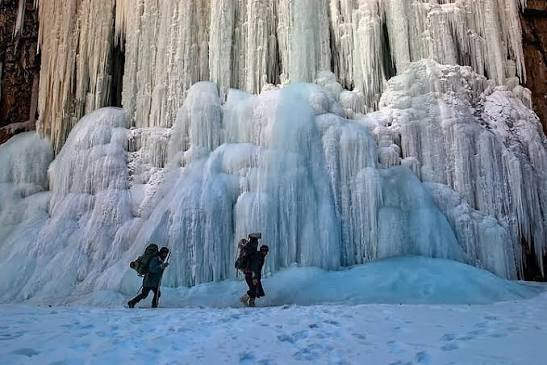
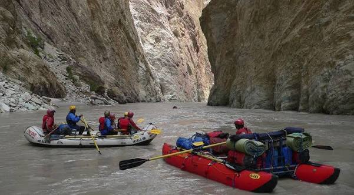
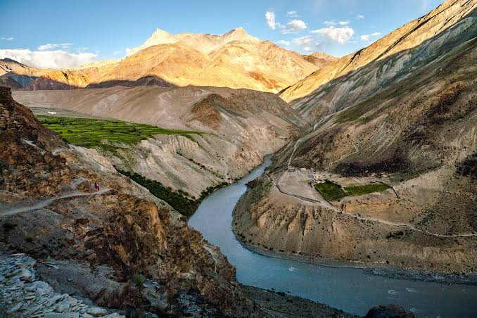
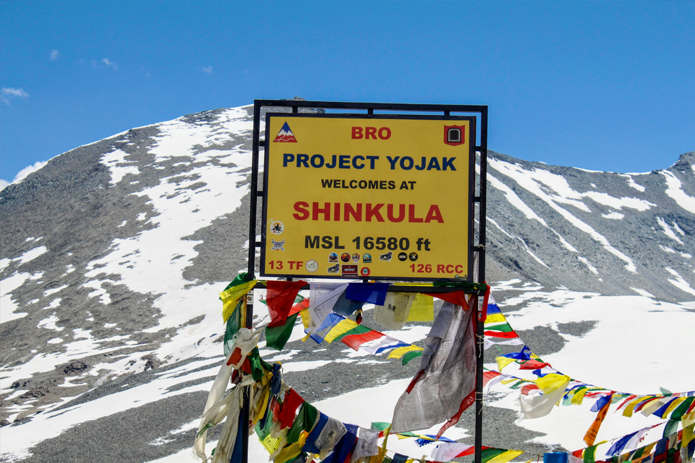

The Untamed Frontier of Ice & Stone
Hidden deep within an isolated sub-district of Ladakh at an average altitude of over 3,500 meters, Zanskar is one of the most ruggedly remote valleys on Earth. Hemmed in by towering 6,000-meter peaks and carved by ferocious, glacier-fed rivers, this sub-alpine desert is a place of grand scales. For decades cut off from the modern world for nine months of the year, it remains the ultimate destination for pure frontier endurance.
Zanskar feels incredibly vast, silent, and wonderfully cut off from modern civilization. It carries a heavy explorer energy—the silence of centuries-old cliffside monasteries is broken only by the crackle of moving river ice or the packing of high-altitude gear. It is an uncompromisingly raw landscape where travelers share a deep sense of camaraderie, forged by thin air, challenging terrain, and the sheer grit required to stand here.

A world-renowned winter trek across the frozen sheet of the Zanskar River. Hike in sub-zero temperatures (-30°C) through massive, vertical rock canyons on shifting black ice.

Self-contained multi-day river expeditions hitting continuous Grade IV rapids. Navigate freezing glacier waters running through sheer, isolated rock ravines.

Hike deep into rugged mountain valleys to reach a remarkable mud-and-timber monastery built directly into the mouth of a massive cave facing a steep river gorge.

Navigate newly cut, loose-gravel dirt tracks running over the brutal 5,091-meter Shinku La Pass, bridging the gap between Himachal and the core Zanskar Valley.